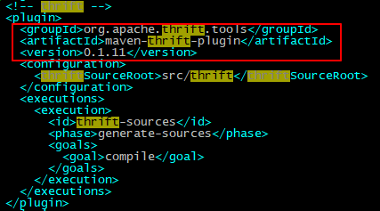

在DATABOX芯片已经在集群的各个节点里安装好, 并且芯片的驱动没问题的情况下,并且将已经写好的DATABOX格式压缩算法的jar包放到hadoop安装目录/usr/lib/hadoop/lib下:
1、进入hive, 使用test数据库: use test;
执行如下命令:
create table xiaochuan_parquet_databox_mr stored as parquet tblproperties("parquet.compression"="DATABOX") as select * from dns_text_100m_none;
报错如下:
hive> create table xiaochuan_parquet_databox_mr stored as parquet tblproperties("parquet.compression"="DATABOX") as select * from dns_text_100m_none;
Query ID = root_20210121180141_b2c3f0e3-f976-4090-856d-c24df6e63bd0
Total jobs = 3
Launching Job 1 out of 3
Number of reduce tasks is set to 0 since there's no reduce operator
Starting Job = job_1611222110583_0002, Tracking URL = http://namenode:8088/proxy/application_1611222110583_0002/
Kill Command = /usr/lib/hadoop/bin/hadoop job -kill job_1611222110583_0002
Hadoop job information for Stage-1: number of mappers: 1; number of reducers: 0
2021-01-21 18:01:48,828 Stage-1 map = 0%, reduce = 0%
2021-01-21 18:02:19,076 Stage-1 map = 100%, reduce = 0%
Ended Job = job_1611222110583_0002 with errors
Error during job, obtaining debugging information...
Examining task ID: task_1611222110583_0002_m_000000 (and more) from job job_1611222110583_0002
Task with the most failures(4):
-----
Task ID:
task_1611222110583_0002_m_000000
URL:
http://namenode:8088/taskdetails.jsp?jobid=job_1611222110583_0002&tipid=task_1611222110583_0002_m_000000
-----
Diagnostic Messages for this Task:
Error: java.lang.RuntimeException: org.apache.hadoop.hive.ql.metadata.HiveException: Hive Runtime Error while processing row {"length":"1","local_province":"471","local_city":"0483","owner_province":"471","owner_city":"0471","roam_type":"4","interface":"11","xdr_id":"593f8a7d000000cf0818cf0015173792","rat":"6","imsi":"460022484228323","imei":"8695520280189378","msisdn":"8618447303769","machine_ip_add_type":"1","sgw_ggsn_ip_add":"100.88.175.51","enb_sgsn_ip_add":"100.19.164.121","pgw_add":"","sgw_ggsn_port":"0","enb_sgsn_port":"0","pgw_port":"65535","enb_sgsn_gtp_teid":"2809","sgw_ggsn_gtp_teid":"197188015","tac":"18291","eci":"80465677","apn":"tmcan.ncb002.hkk460.rpqa","app_type_code":"101","procedure_start_time":"1497336480739538","procedure_end_time":"1497336481186701","longitude":"0","latitude":"49.453910","protocol_type":"4","app_type":"18","app_sub_type":"30944","app_content":"0","app_status":"255","ip_address_type":"1","user_ipv4":"10.213.47.85","user_ipv6":"255.255.255.255","user_port":"49501","l4_protocal":"1","app_server_ip_ipv4":"211.107.222.2","app_server_ip_ipv6":"255.255.255.255","app_server_port":"53","ul_data":"98","dl_data":"151","ul_ip_packet":"1","dl_ip_packet":"1","ul_dura":"0","dl_dura":"0","ul_disorder_ip_packet":"0","dl_disorder_ip_packet":"0","ul_retrans_ip_packet":"0","dl_retrans_ip_packet":"0","tcp_response_time":"0","tcp_ack_time":"0","ul_ip_frag_packets":"0","dl_ip_frag_packets":"0","first_req_time":"0","first_response_time":"0","window_size":"0","mss":"0","tcp_syn_num":"0","tcp_status":"1","session_end":"2","tcp_syn_ack_mum":"0","tcp_ack_num":"0","tcp1_2_handshake_status":"1","tcp2_3_handshake_status":"1","repetition":"0","domain_name":"adashbc.m.taobao.com","ip_addr_num":"2","ip_addr":"104","rcode":"111.184.179.26,79.13.221.100,111.214.122.99,158.13.179.187","dnsreq_num":"0","ancount":"1","nscount":"2","arcount":"0","response_time":"0"}
at org.apache.hadoop.hive.ql.exec.mr.ExecMapper.map(ExecMapper.java:172)
at org.apache.hadoop.mapred.MapRunner.run(MapRunner.java:54)
at org.apache.hadoop.mapred.MapTask.runOldMapper(MapTask.java:453)
at org.apache.hadoop.mapred.MapTask.run(MapTask.java:343)
at org.apache.hadoop.mapred.YarnChild$2.run(YarnChild.java:175)
at java.security.AccessController.doPrivileged(Native Method)
at javax.security.auth.Subject.doAs(Subject.java:422)
at org.apache.hadoop.security.UserGroupInformation.doAs(UserGroupInformation.java:1961)
at org.apache.hadoop.mapred.YarnChild.main(YarnChild.java:169)
Caused by: org.apache.hadoop.hive.ql.metadata.HiveException: Hive Runtime Error while processing row {"length":"1","local_province":"471","local_city":"0483","owner_province":"471","owner_city":"0471","roam_type":"4","interface":"11","xdr_id":"593f8a7d000000cf0818cf0015173792","rat":"6","imsi":"460022484228323","imei":"8695520280189378","msisdn":"8618447303769","machine_ip_add_type":"1","sgw_ggsn_ip_add":"100.88.175.51","enb_sgsn_ip_add":"100.19.164.121","pgw_add":"","sgw_ggsn_port":"0","enb_sgsn_port":"0","pgw_port":"65535","enb_sgsn_gtp_teid":"2809","sgw_ggsn_gtp_teid":"197188015","tac":"18291","eci":"80465677","apn":"tmcan.ncb002.hkk460.rpqa","app_type_code":"101","procedure_start_time":"1497336480739538","procedure_end_time":"1497336481186701","longitude":"0","latitude":"49.453910","protocol_type":"4","app_type":"18","app_sub_type":"30944","app_content":"0","app_status":"255","ip_address_type":"1","user_ipv4":"10.213.47.85","user_ipv6":"255.255.255.255","user_port":"49501","l4_protocal":"1","app_server_ip_ipv4":"211.107.222.2","app_server_ip_ipv6":"255.255.255.255","app_server_port":"53","ul_data":"98","dl_data":"151","ul_ip_packet":"1","dl_ip_packet":"1","ul_dura":"0","dl_dura":"0","ul_disorder_ip_packet":"0","dl_disorder_ip_packet":"0","ul_retrans_ip_packet":"0","dl_retrans_ip_packet":"0","tcp_response_time":"0","tcp_ack_time":"0","ul_ip_frag_packets":"0","dl_ip_frag_packets":"0","first_req_time":"0","first_response_time":"0","window_size":"0","mss":"0","tcp_syn_num":"0","tcp_status":"1","session_end":"2","tcp_syn_ack_mum":"0","tcp_ack_num":"0","tcp1_2_handshake_status":"1","tcp2_3_handshake_status":"1","repetition":"0","domain_name":"adashbc.m.taobao.com","ip_addr_num":"2","ip_addr":"104","rcode":"111.184.179.26,79.13.221.100,111.214.122.99,158.13.179.187","dnsreq_num":"0","ancount":"1","nscount":"2","arcount":"0","response_time":"0"}
at org.apache.hadoop.hive.ql.exec.MapOperator.process(MapOperator.java:518)
at org.apache.hadoop.hive.ql.exec.mr.ExecMapper.map(ExecMapper.java:163)
... 8 more
Caused by: org.apache.hadoop.hive.ql.metadata.HiveException: org.apache.hadoop.hive.ql.metadata.HiveException: java.lang.IllegalArgumentException: No enum constant parquet.hadoop.metadata.CompressionCodecName.DATABOX
at org.apache.hadoop.hive.ql.exec.FileSinkOperator.createBucketFiles(FileSinkOperator.java:577)
at org.apache.hadoop.hive.ql.exec.FileSinkOperator.process(FileSinkOperator.java:675)
at org.apache.hadoop.hive.ql.exec.Operator.forward(Operator.java:842)
at org.apache.hadoop.hive.ql.exec.SelectOperator.process(SelectOperator.java:88)
at org.apache.hadoop.hive.ql.exec.Operator.forward(Operator.java:842)
at org.apache.hadoop.hive.ql.exec.TableScanOperator.process(TableScanOperator.java:97)
at org.apache.hadoop.hive.ql.exec.MapOperator$MapOpCtx.forward(MapOperator.java:162)
at org.apache.hadoop.hive.ql.exec.MapOperator.process(MapOperator.java:508)
... 9 more
Caused by: org.apache.hadoop.hive.ql.metadata.HiveException: java.lang.IllegalArgumentException: No enum constant parquet.hadoop.metadata.CompressionCodecName.DATABOX
at org.apache.hadoop.hive.ql.io.HiveFileFormatUtils.getHiveRecordWriter(HiveFileFormatUtils.java:249)
at org.apache.hadoop.hive.ql.exec.FileSinkOperator.createBucketForFileIdx(FileSinkOperator.java:622)
at org.apache.hadoop.hive.ql.exec.FileSinkOperator.createBucketFiles(FileSinkOperator.java:566)
... 16 more
Caused by: java.lang.IllegalArgumentException: No enum constant parquet.hadoop.metadata.CompressionCodecName.DATABOX
at java.lang.Enum.valueOf(Enum.java:238)
at parquet.hadoop.metadata.CompressionCodecName.valueOf(CompressionCodecName.java:24)
at parquet.hadoop.metadata.CompressionCodecName.fromConf(CompressionCodecName.java:34)
at org.apache.hadoop.hive.ql.io.parquet.write.ParquetRecordWriterWrapper.initializeSerProperties(ParquetRecordWriterWrapper.java:94)
at org.apache.hadoop.hive.ql.io.parquet.write.ParquetRecordWriterWrapper.<init>(ParquetRecordWriterWrapper.java:61)
at org.apache.hadoop.hive.ql.io.parquet.MapredParquetOutputFormat.getParquerRecordWriterWrapper(MapredParquetOutputFormat.java:125)
at org.apache.hadoop.hive.ql.io.parquet.MapredParquetOutputFormat.getHiveRecordWriter(MapredParquetOutputFormat.java:114)
at org.apache.hadoop.hive.ql.io.HiveFileFormatUtils.getRecordWriter(HiveFileFormatUtils.java:261)
at org.apache.hadoop.hive.ql.io.HiveFileFormatUtils.getHiveRecordWriter(HiveFileFormatUtils.java:246)
... 18 more
FAILED: Execution Error, return code 2 from org.apache.hadoop.hive.ql.exec.mr.MapRedTask
MapReduce Jobs Launched:
Stage-Stage-1: Map: 1 HDFS Read: 0 HDFS Write: 0 FAIL
Total MapReduce CPU Time Spent: 0 msec
可以发现问题是缺少了"DATABOX"枚举。所以想到需要修改源码, 把"DATABOX"枚举添加到hive或parquet的某部分源码里, 然后打成jar包替换掉公司的部分jar包, 让"DATABOX"枚举可以顺利在hive中找到, 然后通过反射找到我们公司的DATABOX的压缩jar包。
首先需要下载hive的源码包以便于修改:
通过whereis hive找到hive安装包的位置, 找到 hive的lib库目录在/usr/lib/hive/lib下, 通过hive-common-1.2.2.jar了解到hive的版本为1.2.2。在github中搜索"hive",第一个就是Apache官方的源码路径。通过tag选项找到release-1.2.2版本, 然后直接下载压缩包。 (注意, 最好不要用git clone +链接的方式git源码, 因为这样git的是所有版本的hive的源码(除非加上参数指定版本号), 要下非常久,下压缩包的话只是对应的版本的源码, 比较方便)
下载完源码后 ,解压, 最好在Linux里编译, windows里编译容易有各种问题。可以先在Linux里编译一次, 编译是cd到解压后的源码包的一级目录(统领所有子项目的pom.xml所在的目录), 执行mvn clean package -Phadoop-2 -DskipTests -Pdist 进行编译。具体hive的其他编译可参考hive笔记本
源码直接编译后的输出结果如下, 会生成很多个文件, 其中编译产生的apache-hive-1.2.2-src.tar.gz和github下载的源码包hive-rel-release-1.2.2.zip是一样的内容, apache-hive-1.2.2-bin也只是apache-hive-1.2.2-bin.tar.gz的解压后的结果而已, 但这些结果都会由编译产生。最重要的只是apache-hive-1.2.2-bin.tar.gz这个jar包。(当然, 编译hive源码的目的只是为了看看编译是否正常, 实际上并不一定需要编译, 我们只是需要去源码里找parquet.hadoop.metadata.CompressionCodecName这个类)

如果编译没有什么问题, 再对源码包里的源码进行修改, 源码的修改可以放到Windows里的IDE里面, 可视化较好。或者如果Linux有图形化界面, 用Linux也可以。
对源码进行修改:
首先找到上面的报错提示所在的类parquet.hadoop.metadata.CompressionCodecName, 找到后,观察其路径发现它并不是hive源码里的类, 而是hive的依赖包parquet-hadoop-bundle-1.6.0.jar包里的类, 所以接下来就有了两种思路:
第一种方法:
首先想到比较简单的方式就是在Linux里面创建要修改的类CompressionCodecName为一个文件,以.java结尾(直接用vim CompressionCodecName.java ),然后将刚刚在IDE里找到的parquet.hadoop.metadata.CompressionCodecName类的所有源代码从IDE中复制粘贴进去, 进行相应的修改, 然后保存退出。如下图:
 弄好后直接去刚刚编译好的hive源码包的target目录下, 找到编译好的可执行jar包的可执行包(apache-hive-1.2.2-bin)的lib目录里找该jar包(注意不要直接在公司安装的hive的lib包里找, 因为该lib可能被修改过), 因为既然hive源码包依赖于parquet-hadoop-bundle-1.6.0.jar包, 那么在lib库里肯定有该jar包, 将修改好的类和parquet-hadoop-bundle-1.6.0.jar放在同一个目录下。修改完后直接用javac编译:
弄好后直接去刚刚编译好的hive源码包的target目录下, 找到编译好的可执行jar包的可执行包(apache-hive-1.2.2-bin)的lib目录里找该jar包(注意不要直接在公司安装的hive的lib包里找, 因为该lib可能被修改过), 因为既然hive源码包依赖于parquet-hadoop-bundle-1.6.0.jar包, 那么在lib库里肯定有该jar包, 将修改好的类和parquet-hadoop-bundle-1.6.0.jar放在同一个目录下。修改完后直接用javac编译: javac -classpath parquet-hadoop-bundle-1.6.0.jar 修改了的类1 修改了的类2 修改了的类N。
一次即可将所有修改完了的.java文件编译完成, 生成对应的.class文件。一次将所有的类编译也解决了这些修改了的类之间相互有依赖的问题, 直接将这些类替换掉jar包中对应的类编译。
第二种方法:
下载parquet对应版本的源码包, 首先编译一遍确保能成功编译, 然后修改对应要修改的类(比如下面这个类CompressionCodecName.java), 再将整个源码包编译一遍。整体编译的好处是安全, 对不太了解编译实际原理的人来说比较方便(我就是这样的人)。

可以发现上图蓝框处的枚举有SNAPPY、GZIP和LZO, 此时只需要在后面添加一行DATABOX的枚举即可。同时还要发现在枚举中的绿框参数中, SNAPPY、GZIP和LZO都来自CompressionCodec类, 也就意味着CompressionCodec类里也要仿照SNAPPY、GZIP和LZO这三个加上一个相应的才行。
首先在CompressionCodecName类里修改, 在LZO后面添加一行代码:
DATABOX("com.hadoop.compression.databox.DataboxCodec", CompressionCodec.DATABOX, ".dtbxzenc");
变为如下样式:

CompressionCodec类也在parquet-hadoop-bundle-1.6.0.jar包里:

其次在CompressionCodec类里修改如下:

编译后需要改/usr/lib/parquet/lib的三个jar包, 分别是
parquet-format-2.1.0-cdh5.4.0.jar
parquet-hadoop-1.5.0-cdh5.4.0.jar
parquet-hadoop-bundle-1.5.0-cdh5.4.0.jar
将jar包分发到所有集群节点的hadoop/lib和hive/lib目录下, 并且把芯片需要的jar包分发到hadoop/lib和hive/lib目录下。
发现不再报上面的错误, 但是只在219节点上有压缩速度, 而218上没有, (217是主节点没有设为DataNode和 NodeManager, 所以没有压缩速度正常), 而且建表时表的数据量过大也会报错, 是218引起的, 结果发现只要把218的 DataNode和 NodeManager上面的服务关闭, 那么无论是建表是大数据量还是小数据量都能成功, 但是有一个问题是不能解压。执行select * from xiaochuan_parquet_databox_mr limit 10;
只能写,不能读。报错如下:
hive> select * from xiaochuan_parquet_databox_mr limit 10;
OK
Failed with exception java.io.IOException:java.io.IOException: can not read class parquet.format.FileMetaData: Required field 'codec' was not present! Struct: ColumnMetaData(type:BYTE_ARRAY, encodings:[RLE, PLAIN, BIT_PACKED], path_in_schema:[length], codec:null, num_values:900040, total_uncompressed_size:8556423, total_compressed_size:1115094, data_page_offset:4, statistics:Statistics(max:39 39 39 39 39, min:31, null_count:0))
Time taken: 0.119 seconds
依次将压缩jar包hadoop-2.6.0-databox-aries-v1-1.0.0.jar放到
/usr/lib/hadoop-hdfs/lib
/usr/lib/hadoop/lib
/usr/lib/hive/lib
依然无效
(这是由于没有把改过的parquetjar包分发到各个节点)
Query ID = root_20210121103024_fa417722-d1de-4556-af81-0214886f41ea
Total jobs = 3
Launching Job 1 out of 3
Number of reduce tasks is set to 0 since there's no reduce operator
Starting Job = job_1611190961543_0003, Tracking URL = http://namenode:8088/proxy/application_1611190961543_0003/
Kill Command = /usr/lib/hadoop/bin/hadoop job -kill job_1611190961543_0003
Hadoop job information for Stage-1: number of mappers: 1; number of reducers: 0
2021-01-21 10:30:31,275 Stage-1 map = 0%, reduce = 0%
2021-01-21 10:31:05,733 Stage-1 map = 100%, reduce = 0%
Ended Job = job_1611190961543_0003 with errors
Error during job, obtaining debugging information...
Examining task ID: task_1611190961543_0003_m_000000 (and more) from job job_1611190961543_0003
Task with the most failures(4):
-----
Task ID:
task_1611190961543_0003_m_000000
URL:
http://namenode:8088/taskdetails.jsp?jobid=job_1611190961543_0003&tipid=task_1611190961543_0003_m_000000
-----
Diagnostic Messages for this Task:
Error: java.io.IOException: java.lang.reflect.InvocationTargetException
at org.apache.hadoop.hive.io.HiveIOExceptionHandlerChain.handleRecordReaderCreationException(HiveIOExceptionHandlerChain.java:97)
at org.apache.hadoop.hive.io.HiveIOExceptionHandlerUtil.handleRecordReaderCreationException(HiveIOExceptionHandlerUtil.java:57)
at org.apache.hadoop.hive.shims.HadoopShimsSecure$CombineFileRecordReader.initNextRecordReader(HadoopShimsSecure.java:266)
at org.apache.hadoop.hive.shims.HadoopShimsSecure$CombineFileRecordReader.<init>(HadoopShimsSecure.java:213)
at org.apache.hadoop.hive.shims.HadoopShimsSecure$CombineFileInputFormatShim.getRecordReader(HadoopShimsSecure.java:333)
at org.apache.hadoop.hive.ql.io.CombineHiveInputFormat.getRecordReader(CombineHiveInputFormat.java:720)
at org.apache.hadoop.mapred.MapTask$TrackedRecordReader.<init>(MapTask.java:169)
at org.apache.hadoop.mapred.MapTask.runOldMapper(MapTask.java:432)
at org.apache.hadoop.mapred.MapTask.run(MapTask.java:343)
at org.apache.hadoop.mapred.YarnChild$2.run(YarnChild.java:175)
at java.security.AccessController.doPrivileged(Native Method)
at javax.security.auth.Subject.doAs(Subject.java:422)
at org.apache.hadoop.security.UserGroupInformation.doAs(UserGroupInformation.java:1961)
at org.apache.hadoop.mapred.YarnChild.main(YarnChild.java:169)
Caused by: java.lang.reflect.InvocationTargetException
at sun.reflect.NativeConstructorAccessorImpl.newInstance0(Native Method)
at sun.reflect.NativeConstructorAccessorImpl.newInstance(NativeConstructorAccessorImpl.java:62)
at sun.reflect.DelegatingConstructorAccessorImpl.newInstance(DelegatingConstructorAccessorImpl.java:45)
at java.lang.reflect.Constructor.newInstance(Constructor.java:423)
at org.apache.hadoop.hive.shims.HadoopShimsSecure$CombineFileRecordReader.initNextRecordReader(HadoopShimsSecure.java:252)
... 11 more
Caused by: java.io.IOException: Cannot create an instance of InputFormat class org.apache.hadoop.mapred.TextInputFormat as specified in mapredWork!
at org.apache.hadoop.hive.ql.io.HiveInputFormat.getInputFormatFromCache(HiveInputFormat.java:212)
at org.apache.hadoop.hive.ql.io.CombineHiveRecordReader.<init>(CombineHiveRecordReader.java:59)
... 16 more
Caused by: java.lang.RuntimeException: Error in configuring object
at org.apache.hive.common.util.ReflectionUtil.setJobConf(ReflectionUtil.java:115)
at org.apache.hive.common.util.ReflectionUtil.setConf(ReflectionUtil.java:103)
at org.apache.hive.common.util.ReflectionUtil.newInstance(ReflectionUtil.java:87)
at org.apache.hadoop.hive.ql.io.HiveInputFormat.getInputFormatFromCache(HiveInputFormat.java:204)
... 17 more
Caused by: java.lang.reflect.InvocationTargetException
at sun.reflect.NativeMethodAccessorImpl.invoke0(Native Method)
at sun.reflect.NativeMethodAccessorImpl.invoke(NativeMethodAccessorImpl.java:62)
at sun.reflect.DelegatingMethodAccessorImpl.invoke(DelegatingMethodAccessorImpl.java:43)
at java.lang.reflect.Method.invoke(Method.java:498)
at org.apache.hive.common.util.ReflectionUtil.setJobConf(ReflectionUtil.java:112)
... 20 more
Caused by: java.lang.IllegalArgumentException: Compression codec com.hadoop.compression.databox.DataboxCodec not found.
at org.apache.hadoop.io.compress.CompressionCodecFactory.getCodecClasses(CompressionCodecFactory.java:139)
at org.apache.hadoop.io.compress.CompressionCodecFactory.<init>(CompressionCodecFactory.java:180)
at org.apache.hadoop.mapred.TextInputFormat.configure(TextInputFormat.java:45)
... 25 more
Caused by: java.lang.ClassNotFoundException: Class com.hadoop.compression.databox.DataboxCodec not found
at org.apache.hadoop.conf.Configuration.getClassByName(Configuration.java:2202)
at org.apache.hadoop.io.compress.CompressionCodecFactory.getCodecClasses(CompressionCodecFactory.java:132)
... 27 more
FAILED: Execution Error, return code 2 from org.apache.hadoop.hive.ql.exec.mr.MapRedTask
MapReduce Jobs Launched:
Stage-Stage-1: Map: 1 HDFS Read: 0 HDFS Write: 0 FAIL
Total MapReduce CPU Time Spent: 0 msec

hive> select * from xiaochuan_parquet_databox_mr4 limit 10;
OK
Failed with exception java.io.IOException:java.io.IOException: can not read class parquet.format.FileMetaData: Required field 'codec' was not present! Struct: ColumnMetaData(type:BYTE_ARRAY, encodings:[RLE, PLAIN, BIT_PACKED], path_in_schema:[length], codec:null, num_values:225010, total_uncompressed_size:2139141, total_compressed_size:279571, data_page_offset:4, statistics:Statistics(max:39 39 39 39 39, min:31, null_count:0))
Time taken: 0.166 seconds
hive> select count(*) from xiaochuan_parquet_databox_mr4
> ;
OK
225010
Time taken: 0.167 seconds, Fetched: 1 row(s)
---------------------------------------------------------------------------------------------------------------------------
1、修改parquet-format-2.1.0
下载源码parquet-format-2.1.0, 修改文件src/thrift/parquet.thrift中的CompressionCodec枚举。
enum CompressionCodec {
UNCOMPRESSED = 0;
SNAPPY = 1;
GZIP = 2;
LZO = 3;
DATABOX = 4;
}
在本地Linux环境中安装thrift, 并将parquet-format-2.1.0项目里的pom.xml中的如下依赖的thrift version改为与本地环境安装的thrift的版本一致。
<dependency>
<groupId>org.apache.thrift</groupId>
<artifactId>libthrift</artifactId>
<version>0.9.1</version>
</dependency>
接下来的步骤有两种做法:
第一种做法:
最简单的做法, 再将parquet-format-2.1.0项目里的pom.xml的maven-thrift-plugin插件的版本由0.1.10改为0.1.11(或更高版本), 因为现在maven-thrift-plugin在各个maven中央仓库中的最低版本就是0.1.11, 如果保持为0.1.10,则用maven会始终编译不成功。

修改好后, 执行mvn install -DskipTests。即可生成parquet-format-2.1.0.jar。
注意: 这里需要执行mvn install -DskipTests而不是mvn package -DskipTests是因为我们要将修改过的parquet-format-2.1.0.jar发布到本地仓库, 以供接下来的parquet-mr-parquet-1.5.0使用mvn编译时使用。
第二种做法:
使用thrift执行src/thrift/parquet.thrift文件,用thrift --gen java parquet.thrift ,(或者在项目的一级目录下直接执行make命令也可以, 因为Makefile文件里的就是thrift命令),生成parquet.format包下的所有代码。

并将生成好的所有java源码文件复制到parquet-format-2.1.0项目中的src/main/java/parquet/format目录下。然后将pom.xml文件中多余的内容删除, 只留下如下内容: (注意, 只剩下如下内容会使得最终编译出来的jar包比第一种方法的jar包少一部分源码, 所以还是推荐第一种方法, 因为第一种方法生成的jar包才是和maven中央仓库下载的源码数量一样)

执行mvn package -DskipTests。生成parquet-format-2.1.0.jar。
(2)、下载源码parquet-mr-parquet-1.5.0, 修改文件parquet-mr-parquet-1.5.0/parquet-hadoop/src/main/java/parquet/hadoop/metadata/CompressionCodecName.java文件
DATABOX("com.hadoop.compression.databox.DataboxCodec", CompressionCodec.DATABOX, ".dtbxzenc");
接下来
方法一: 按照(1)中的方法一, 并且把parquet-mr-parquet-1.5.0/pom.xml里面的以下内容注释掉:
<module>parquet-cascading</module>
<module>parquet-protobuf</module>
<module>parquet-scrooge</module>
<module>parquet-thrift</module>
<module>parquet-hive</module>
<module>parquet-hive-bundle</module>
则可直接编译源码parquet-mr-parquet-1.5.0
方法二: 按照(1)中的方法二, 则需要:
将(1)中编译好的parquet-format-2.1.0.jar解压。 找到文件parquet/format/CompressionCodec.class, 将其替换掉maven本地仓库中从中央仓库下载的parquet-format-2.1.0.jar包的同路径下的同名文件。并且把parquet-mr-parquet-1.5.0/pom.xml里面的以下内容注释掉:
<module>parquet-cascading</module>
<module>parquet-protobuf</module>
<module>parquet-scrooge</module>
<module>parquet-thrift</module>
<module>parquet-hive</module>
<module>parquet-hive-bundle</module>
再编译源码parquet-mr-parquet-1.5.0即可成功(否则将(1)中方法二编译好的parquet-format-2.1.0.jar发送到本地仓库会导致编译不成功, 因为缺少内容)
maven将jar包发布到本地仓库除了编译的时候install, 还可用以下命令, 直接install Linux文件目录中的jar包。如发布hadoop-2.6.0-databox-aries-v1-1.0.0.jar:
mvn install:install-file -Dfile=hadoop-2.6.0-databox-aries-v1-1.0.0.jar -DgroupId=com.hadoop.compression.databox -DartifactId=hadoop-2.6.0-databox-aries-v1 -Dversion=1.0.0 -Dpackaging=jar
发布后可在本地仓库中找打如下所示:


<dependency>
<groupId>com.twitter</groupId>
<artifactId>parquet-format</artifactId>
<version>${parquet.format.version}</version>
</dependency>
最简单的适配Databox的过程:
经过上面的思考, 我们发现, 其实只需要替换四个jar包中的CompressionCodec.class和CompressionCodecName.class 两个文件即可。那么最简单的替换方法就是, 准备好l两个源码文件CompressionCodec.java和CompressionCodecName.java, 用javac -classpath 命令, 分别用那四个需要改动的,正在集群中正在使用的jar包将这两个源码文件编译, 当然并不是所有jar包这两个文件都需要, 有的只需要一个就够了, 那就只编译一个。所有的编译命令如下:
javac -classpath parquet-format-2.1.0-cdh5.4.0.jar CompressionCodec.java
javac -classpath parquet-hadoop-1.5.0-cdh5.4.0.jar CompressionCodecName.java
javac -classpath parquet-hadoop-bundle-1.5.0-cdh5.4.0.jar CompressionCodec.java CompressionCodec.java
javac -classpath hive-exec-1.2.2-bc1.4.0.jar CompressionCodec.java CompressionCodec.java
然后再把各自编译好的.class文件替换掉各自jar包中的文件, 再打包。最后替换掉集群中原先使用的jar包即可。
也就是
1、解压/usr/lib/parquet/lib/parquet-hadoop-1.5.0-cdh5.4.0.jar
替换parquet/format/CompressionCodec.class
2、解压/usr/lib/parquet/lib/parquet-hadoop-bundle-1.5.0-cdh5.4.0.jar
替换parquet/hadoop/metadata/CompressionCodecName.class
替换parquet/format/CompressionCodec.class
3、解压/usr/lib/parquet/lib/parquet-hadoop-1.5.0-cdh5.4.0.jar
替换parquet/hadoop/metadata/CompressionCodecName.class
4、解压/usr/lib/hive/lib/hive-exec-1.2.2-bc1.4.0.jar
替换parquet/format/CompressionCodec.class
替换parquet/hadoop/metadata/CompressionCodecName.class